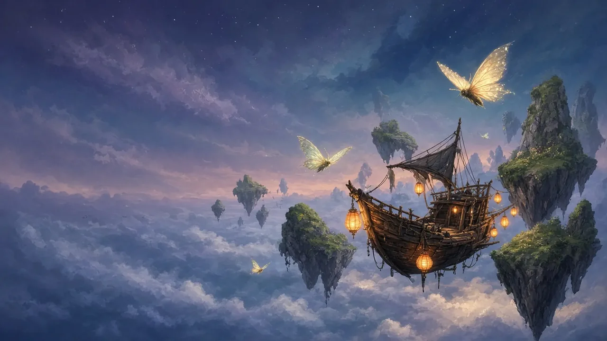
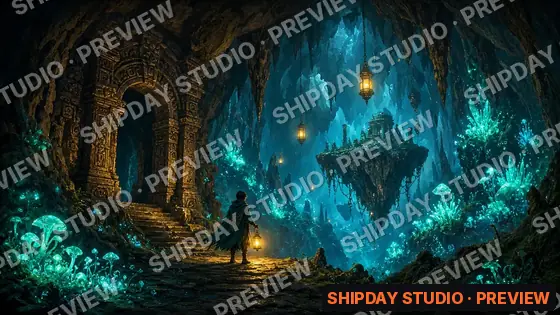

A co-op sky-sailing adventure
Crew a patched-up sky-ship with up to three friends. Chart drifting isles, trade with lantern towns and outrun the storm that eats the map, one dusk at a time.
PC · consoles later1–4 players online co-opEarly access · 2027
The voyage
Bolt on sails, lantern engines and odd salvage. Every upgrade changes how she handles.
Islands move between sessions. Old routes vanish, new ones appear on the horizon.
A living storm front chases the crew. Push your luck for loot or turn for harbour.
Media

Roadmap
Small rounds with the community crew.
The first three isles, free to play.
Custom hulls and crew roles.
Full drift, storm seasons, co-op.
Join the crew
One short email when there's something to play. No spam, unsubscribe anytime. Wishlisting helps a small studio more than you'd think.